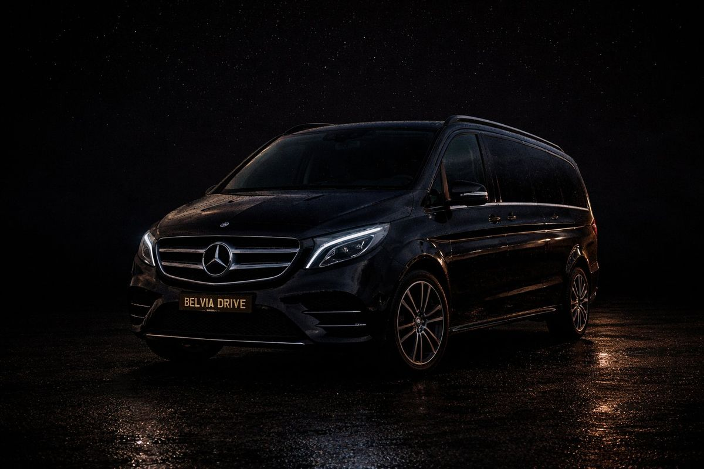

Een uitzonderlijk voertuig voor uw groepsverplaatsingen. Het comfort van een berline, de ruimte van een minibus, de service van een privéchauffeur. Voor uw luchthaventransfer of beschikbaarstelling — uw chauffeur staat klaar.

Of u nu een luchthaventransfer nodig hebt of een chauffeur ter beschikking, de Van van Belvia Drive past zich aan uw programma aan.
Groot gezin, reizende collega's, delegatie. Eén voertuig voor de hele groep, één chauffeur, één vertrek. Realtime vluchttracking, 20 minuten gratis wachttijd na landing. Brussels Airport (BRU) en Brussels South Charleroi (CRL).
Uw chauffeur blijft ter beschikking zolang u wilt. Professionele bezoeken, rondreis langs vergaderingen, druk programma in Brussel. Ideaal voor officiële delegaties, reizende teams en VIP-cliënten.
Parijs, Amsterdam, Luxemburg, Keulen. 5 tot 8 personen in één voertuig, in volledig comfort. Tolvatten inbegrepen in het gegarandeerde tarief. Draaibare stoelen tegenover elkaar om onderweg te werken.
Europees Parlement, Commissie, NAVO, ambassades. Chauffeurs getraind in protocol, discrete service, getinte ruiten gegarandeerd. Bedrijfsfacturatie beschikbaar op aanvraag.
Gala's, bruiloften, vernissages, privéfeesten. De hele groep reist samen, in stijl. Uw chauffeur wacht de hele avond op u. Geen parkeerzorgen, geen aangewezen bestuurder nodig.
Waterloo, Braine-l'Alleud, La Louvière, Seneffe, Wavre. Bedrijfs shuttle voor uw teams vanuit Brabant naar Brussel of de luchthaven. Een praktischere en voordeligere oplossing dan meerdere wagens.
De Mercedes V-Klasse of equivalent is geen gewone minibus. Het is een mobiele werk- en comfortruimte, ontworpen voor professionals en veeleisende groepen.
Onze Van bedient de 19 gemeenten van Brussel alsook Waals- en Vlaams-Brabant in een straal van 25 km. De ideale oplossing voor grote families, zaken groepen en officiële delegaties.
In Brabant is de Van bijzonder gewild voor bedrijfsshuttles vanuit Waterloo, Braine-l'Alleud, La Louvière en Seneffe naar Brussels Airport (BRU).
Mijn zone controleren en reserverenBrussel-Stad · Elsene · Ukkel · Etterbeek · Schaarbeek · Anderlecht · Sint-Lambrechts-Woluwe · Sint-Pieters-Woluwe · Vorst · Sint-Gillis · Molenbeek · Jette · Laken · Evere · Oudergem · Watermaal-Bosvoorde · Ganshoren · Koekelberg
Waterloo · Braine-l'Alleud · Terhulpen · Rixensart · Waver · Louvain-la-Neuve · La Louvière · Seneffe · Zaventem · Tervuren · Overijse
Van Waterloo → BRU Zaventem · Van groep Brussel → Parijs · Van delegatie Europees Parlement · Van familie luchthaven · Van bedrijfs shuttle Brabant
De Mercedes V-Klasse of equivalent biedt plaats aan tot 8 passagiers en 8 bagagestukken. Dit is de ideale oplossing voor grote families, zaken groepen en delegaties.
Ja. De Van van Belvia Drive verzorgt transfers naar Brussels Airport (BRU) en Brussels South Charleroi (CRL) met vluchttracking en 20 minuten gratis wachttijd na landing. 24/7 beschikbaar.
Absoluut. Onze Van is beschikbaar voor beschikbaarstellingen per uur of per dag. Ideaal voor bezoeken, evenementen, delegaties of drukke programma's in Brussel en de rand.
Ja. De Mercedes V-Klasse biedt een configuratie met draaibare stoelen tegenover elkaar, 4G WiFi en 220V-stopcontacten. Perfect voor teams die hun reistijd optimaal willen benutten.
Ja. De Van Premium is ideaal voor langeafstandsritten in groep. Brussel naar Parijs, Amsterdam of Luxemburg voor 5 tot 8 personen — tolvatten inbegrepen in het gegarandeerde tarief.